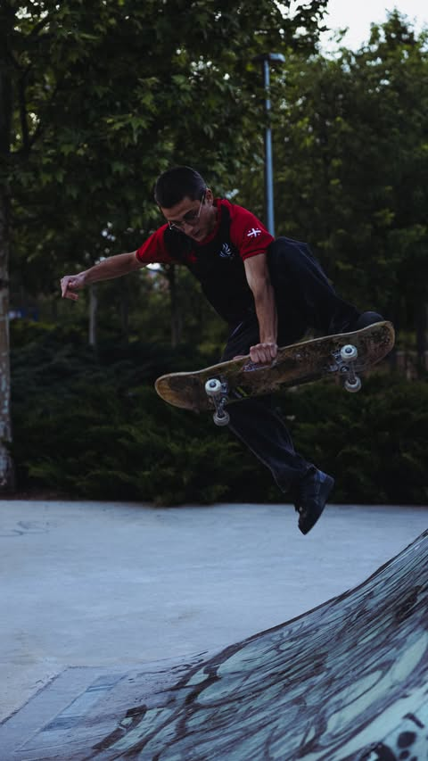
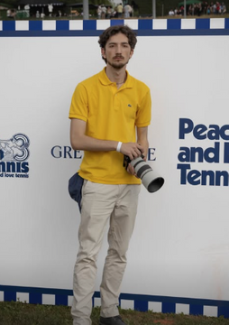

OBSESSION / CREATIVE WORK
My Projects.
Ideas, experiencias y fotografías convertidas en proyectos.
01 / EXPLORE MY WORK
Cada proyecto cuenta
una historia diferente.
Aquí encontrarás algunos de mis trabajos, sesiones y proyectos fotográficos personales. Cada imagen representa una idea, una experiencia y una forma diferente de entender la fotografía.

01 / PHOTOGRAPHY
Project One
Fotografía y creatividad
02 / PORTRAIT
Project Two
Retrato y expresión

03 / LIFESTYLE
Project Three
Historias y momentos

04 / CREATIVE
Project Four
Proyectos personales
THANK YOU FOR EXPLORING OBSESSION